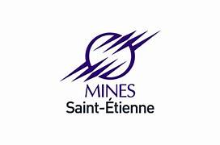
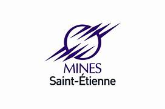
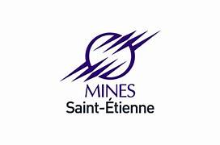

PhD Candidate in Applied Mathematics
Université Polytechnique Hauts-de-France (UPHF)
& École des Mines de Saint-Étienne (EMSE)
Email: RazakChristophe.SabiGninkou@uphf.fr
Email: razsabigninchrist@gmail.com
Email: sabigninkou.razakchristophe@imsp-uac.org
